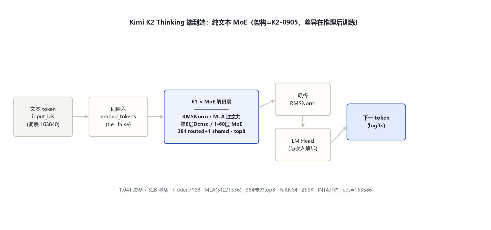
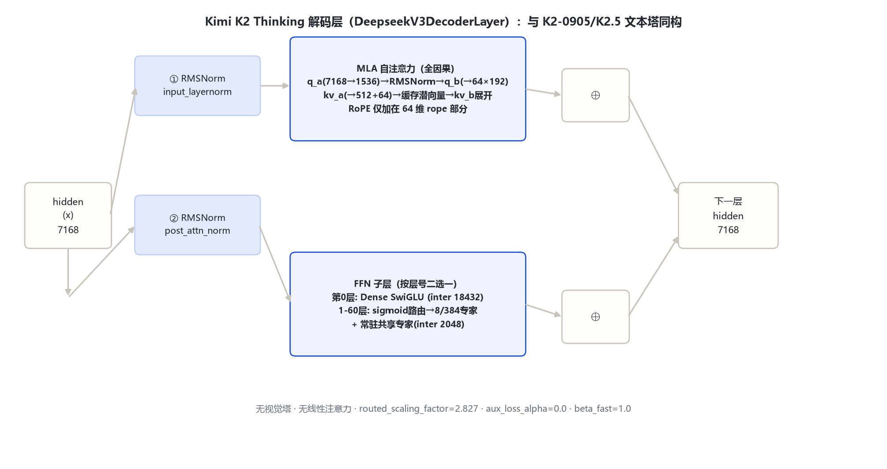

Kimi K2 Thinking 是 Kimi K2（K2-0905 底座）的推理（reasoning）变体：架构与 K2-0905 文本底座逐字段一致（DeepseekV3ForCausalLM，model_type kimi_k2），差异在长思维链 SFT + RL 后训练。纯文本模型，无视觉塔。
| 字段 | 取值 | 来源 |
|---|---|---|
| architectures | DeepseekV3ForCausalLM | 官方 config |
| 层数 / hidden / Q·KV 头 | 61（第0层dense）· 7168 · 64 / 64 | 官方 config |
| MLA | kv_lora 512 · q_lora 1536 · nope 128 · rope 64 · v 128 | 官方 config |
| MoE | 384 routed + 1 shared · top-8 · moe_inter 2048 · first_k_dense_replace 1 | 官方 config |
| dense FFN | intermediate 18432（第 0 层） | 官方 config |
| 路由 | sigmoid · noaux_tc · routed_scaling 2.827 · aux_loss_alpha=0 | 官方 config |
| RoPE / 上下文 | θ=50000 · YaRN factor 64（beta_fast=1.0）· max_position 262144 | 官方 config |
| 词表 / tie | 163840 · tie=false | 官方 config |
| bos / eos / pad | 163584 / 163586 / 163839 | 官方 config |
| 量化 | compressed-tensors int4 group32 dynamic act-order | 官方 config quantization_config |

架构本体即 K2-0905 文本底座（规格已核验：model_type=kimi_k2、DeepseekV3ForCausalLM、7168/61层、MLA 同维、384+1 专家 top-8、YaRN64、262144、vocab163840、tie=false、fp8 e4m3；K2 论文 arXiv:2507.20534）。与 K2.5 的关系：Thinking 是 K2 底座的纯文本推理版，K2.5 是同一底座的多模态智能体版——共享文本塔，差异只在视觉塔有无与后训练目标。
DeepseekV3DecoderLayer（modeling_deepseek_v3.py:485-529）pre-norm 双残差。FFN 按层号二选一：第 0 层 dense SwiGLU（18432）；1–60 层 MoE——sigmoid 路由选 8 个 routed 专家加权，叠加常驻共享专家（:201-222, 492-495）。

sigmoid 打分带 e_score_correction_bias；n_group=1 时直接 top-8，归一化后乘 routed_scaling 2.827；aux_loss_alpha=0。
n_shared_experts=1，对每 token 都前向一次，与 routed 加权和相加，承载通用知识。
差异不在 config 字段而在后训练：长 CoT SFT + RL 激发出先思考后回答；config 无 reasoning 专用开关（无 nextn 层）。
① 无 vision_config；② eos=163586（K2.5 为 163585）；③ YaRN beta_fast=1.0（K2.5 为 32）。
MLA 全因果、无滑窗、Q/KV 均 64 头：q_a(7168→1536)→RMSNorm→q_b；kv_a(7168→512+64) 压缩缓存，解码时 kv_b 展开；RoPE 仅加在 64 维 rope 部分。以 config 字段核验：标准 MLA 因果全注意力，非线性注意力。
词表 163840。bos=163584、eos=163586、pad=163839。上下文 262144（YaRN factor 64，original_max_position 4096，beta_fast/beta_slow=1.0）。无视觉 token。
1.04T-A32B 纯文本 MoE，DeepSeek-V3 系 MLA + 384 专家 top-8（arXiv:2507.20534）。
同架构底座的推理后训练变体，开源 INT4；eos=163586，YaRN beta_fast=1.0。
同一文本塔加 MoonViT-3D 视觉塔，变原生多模态智能体模型（见 kimi_k2_5 目录）。
K2.6、K2.7-Code、Kimi-K3、Kimi-Linear-48B-A3B、Kimi-VL-A3B、Moonlight-16B-A3B。